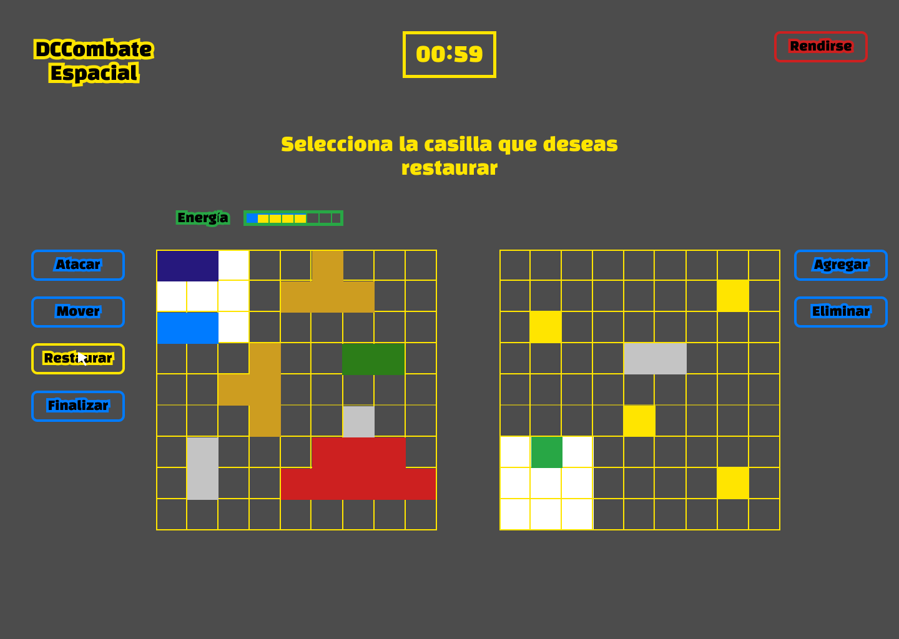
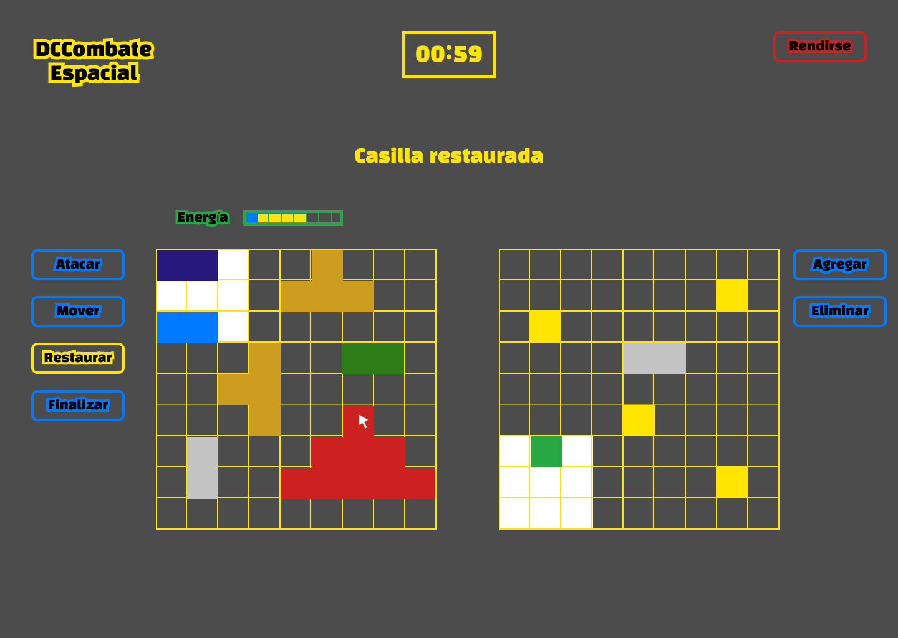

Antes de comenzar el juego, se debe elegir la
posición inicial de las naves en el espacio del tablero.
1 / 21

Para ubicar las naves, debes elegir la nave correspondiente que deseas colocar.
2 / 21

Y arrastrar la nave elegida a la posición deseada en el tablero.
3 / 21

Una vez ingresada la nave, se dispone la opcion de rotar con la tecla R.
4 / 21

Rotando en 90 grados cada vez que se presione la tecla.
5 / 21

Una vez colocadas todas las naves, presionar la flecha para confirmar el tablero.
6 / 21

Si el rival no está listo, se esperará a que termine. Ten en mente que hay un tiempo máximo para
ubicar todas las naves.
7 / 21

Comienza el juego. Cada turno dura un tiempo máximo de 1 minuto. Se pueden realizar todas las acciones
que desees con la energía disponible.
8 / 21

Si se desea atacar, se presiona el botón de "atacar"...
9 / 21

Y luego se indica en el mapa donde se desea atacar.
10 / 21

La consola principal indicará si fue un "hit" o un "miss"
11 / 21

Para mover, se presiona el botón de "mover"...
12 / 21

Se presiona la nave que se desea mover.
13 / 21

Y se empieza a arrastrar hasta el lugar de movimiento deseado.
14 / 21

Hay que tener en consideración que el movimiento va consumiendo energía.
15 / 21

Y se podrá mover máximo hasta agotar la energía.
16 / 21

Al soltar la nave, se confirma el lugar de desplazamiento.
17 / 21

Se pueden restaurar naves. Para esto se debe presionar el botón "restaurar"
18 / 21

Presionando la casilla donde se desee restaurar se reparará esa parte dañada de la nave.
19 / 21

Una vez finalizado el turno, será el turno del rival. Se pueden agregar marcas en el mapa anexo.
20 / 21

También se pueden eliminar marcas en el mapa anexo presionando el botón "Agregar"
21 / 21